Aplikacija na jednom mjestu vodi sve Vaše mentorirane studente (završni i diplomski radovi) kroz sedam statusa:
Inicijalni kontakt → Dostavljen prijedlog teme → Tema zadana → Tema odabrana – pisanje rada → Rad predan → Ocjenjivanje mentora → Ocjenjivanje komisije
Studenti se prijavljuju Google računom @unipu.hr i vide samo svoje podatke. Administratorski pristup ima isključivo račun sbaressis@unipu.hr (varijabla ADMIN_EMAILS). Prijavljujete se isto kao studenti – Prijava putem Googlea – a aplikacija Vas prepoznaje kao administratora (oznaka admin uz ime).
| Kartica | Namjena |
|---|---|
| Studenti | Tablica svih studenata, filtri, pretraga, dodavanje; klik na redak otvara detalj studenta. |
| Predlošci i materijali | Službeni predlošci i svi materijali (globalni i individualni); dodavanje i brisanje. |
| Rokovi | Uređivanje popisa rokova koji se prikazuje studentima. |
| Upute (pregled) | Pregled kartice „Upute i rokovi” onako kako je vide studenti. |
| Poslani mailovi | Zapis svih obavijesti koje je aplikacija poslala (ili zabilježila). |
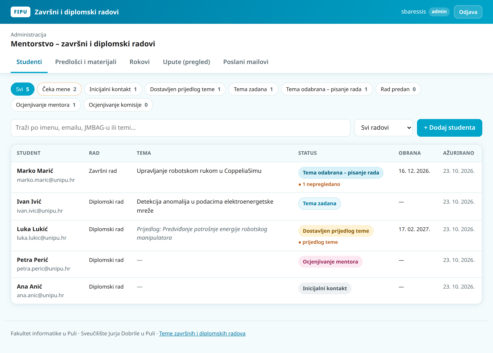
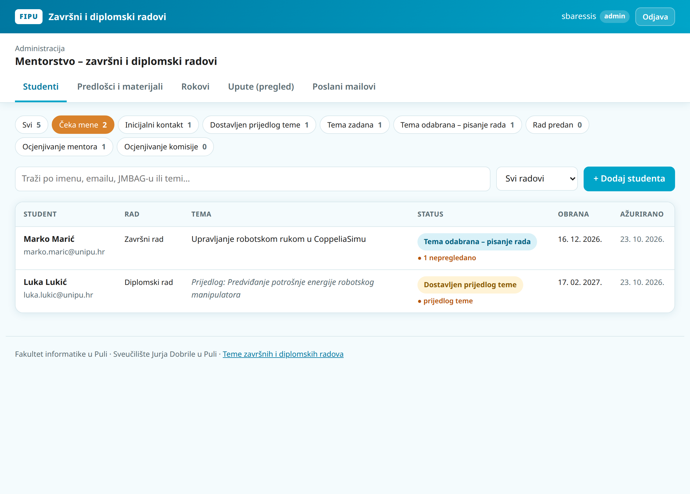
Studenta možete dodati ručno ili on može ući sam.
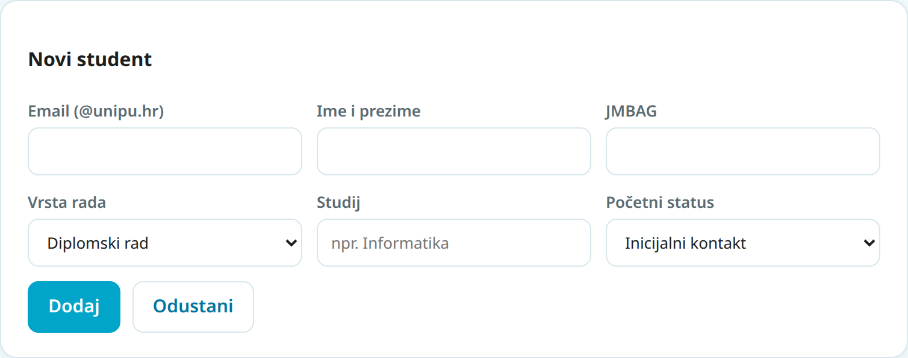
Ako se prijavi student s @unipu.hr računom kojeg niste dodali, zapis se stvara automatski sa statusom Inicijalni kontakt i oznakom novi, a Vi dobivate email „Novi student u aplikaciji: …”. Ako student ne pripada Vama, jednostavno ga obrišite (poglavlje 4.7).
Prijava je dopuštena za unipu.hr i njezine poddomene (npr. student.unipu.hr). Provjera se radi na poslužitelju preko Googleovog potpisanog tokena, pa se ne može zaobići.
Klik na redak u tablici otvara detalj studenta. Natrag se vraćate poveznicom ← Svi studenti.
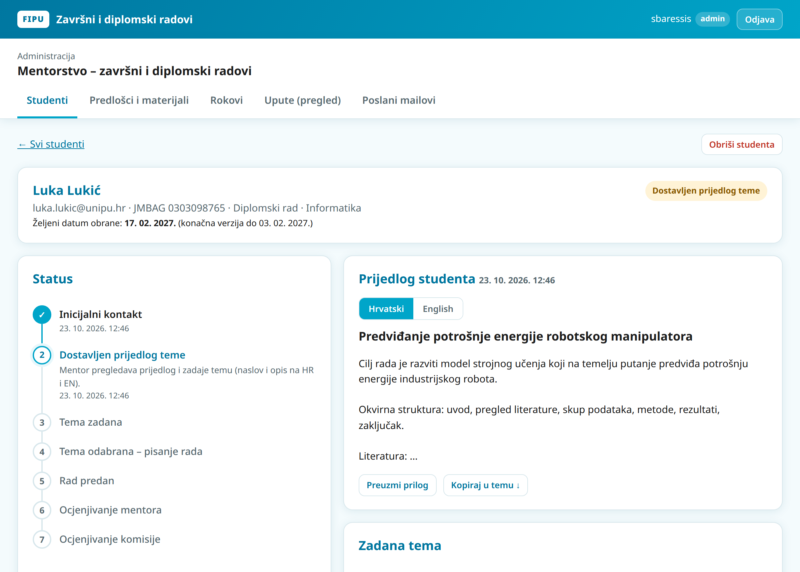
Lijevo je vremenska crta statusa s datumima. Ispod je obrazac Postavi / pregazi status:
Ručno postavljanje uvijek ima prednost pred automatskim prijelazima. Automatski prijelazi (poglavlje 8) idu samo naprijed – ako ste studenta vratili unatrag, njegova sljedeća akcija ponovno ga pomiče naprijed.
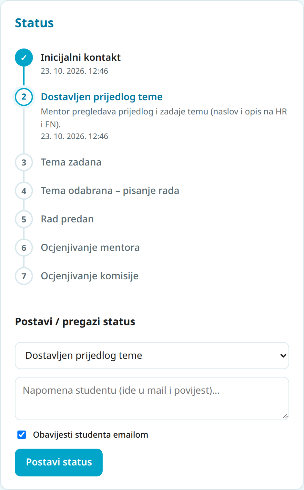
Ako je student poslao prijedlog, prikazuje se u okviru Prijedlog studenta (HR/EN prekidač, datum slanja, gumb Preuzmi prilog ako je priložio datoteku).
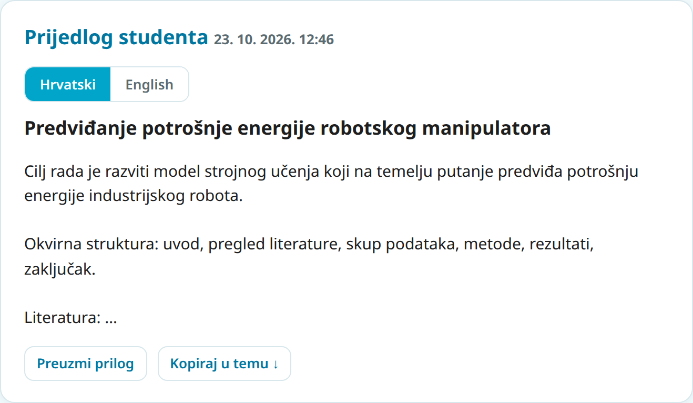
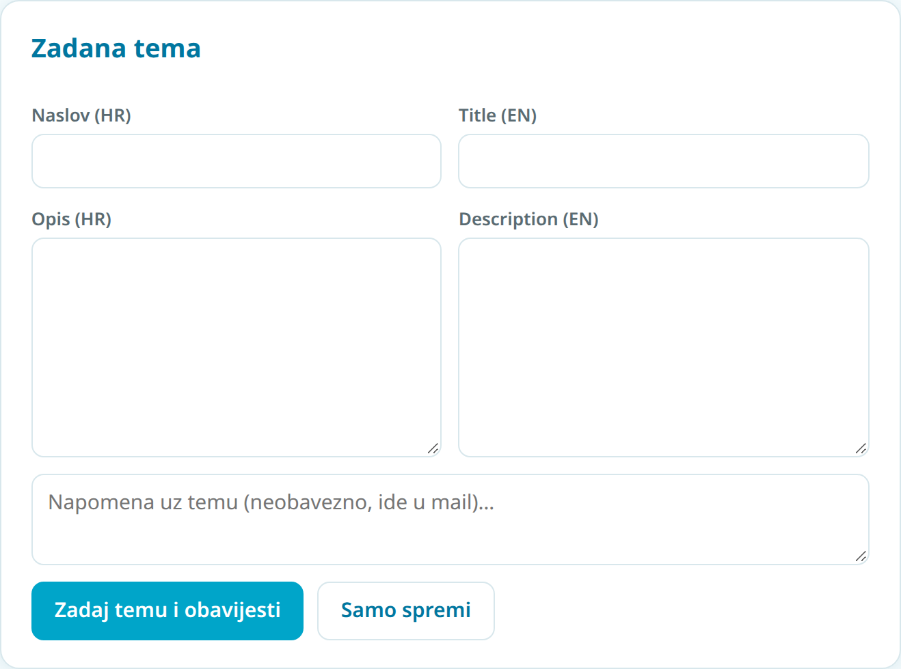
Temu morate unijeti i u Nastavnički portal (ISVU) – inače je student ne vidi u Studomatu. Kad student u aplikaciji klikne „Potvrđujem odabir teme”, dobit ćete email da njegov odabir potvrdite u Nastavničkom portalu.
Okvir Predaje prikazuje sve datoteke koje je student predao (najnovija gore), s oznakom Na pregled ili Konačna verzija, datumom, veličinom i porukom studenta. Gumb Preuzmi preuzima datoteku.
Postojeću povratnu informaciju možete promijeniti poveznicom Uredi povratnu informaciju (student ponovno dobiva email). Predaja bez povratne informacije broji se kao „nepregledana” u filtru „Čeka mene”.
Student kod svake predaje (i verzije za pregled i konačne verzije) mora unijeti poveznicu na GitHub repozitorij rada (https://github.com/korisnik/repozitorij); bez nje predaja se odbija – provjerava se i na poslužitelju. Poveznica se prikazuje uz svaku predaju, u zaglavlju detalja studenta i u mailu o predaji, a zadnja unesena poveznica nudi se studentu kod sljedeće predaje. Ista poveznica prikazuje se i na stranici za potpis izvještaja (4.8).
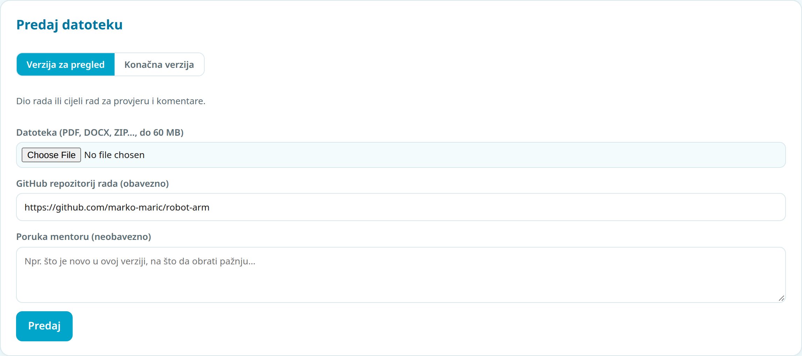
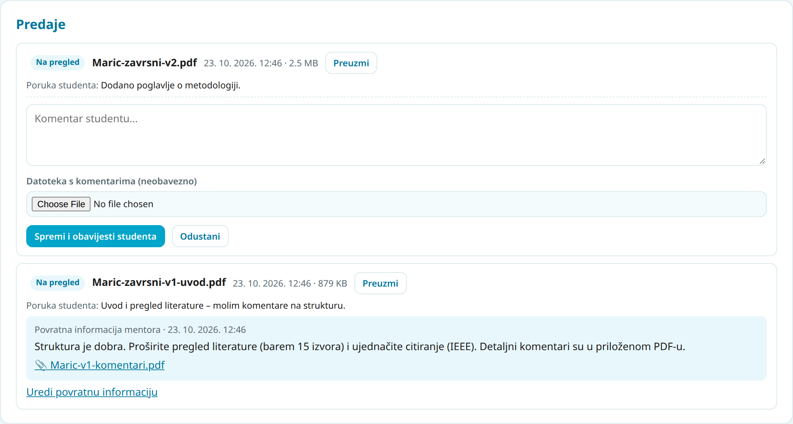
Spremite gumbom Spremi.
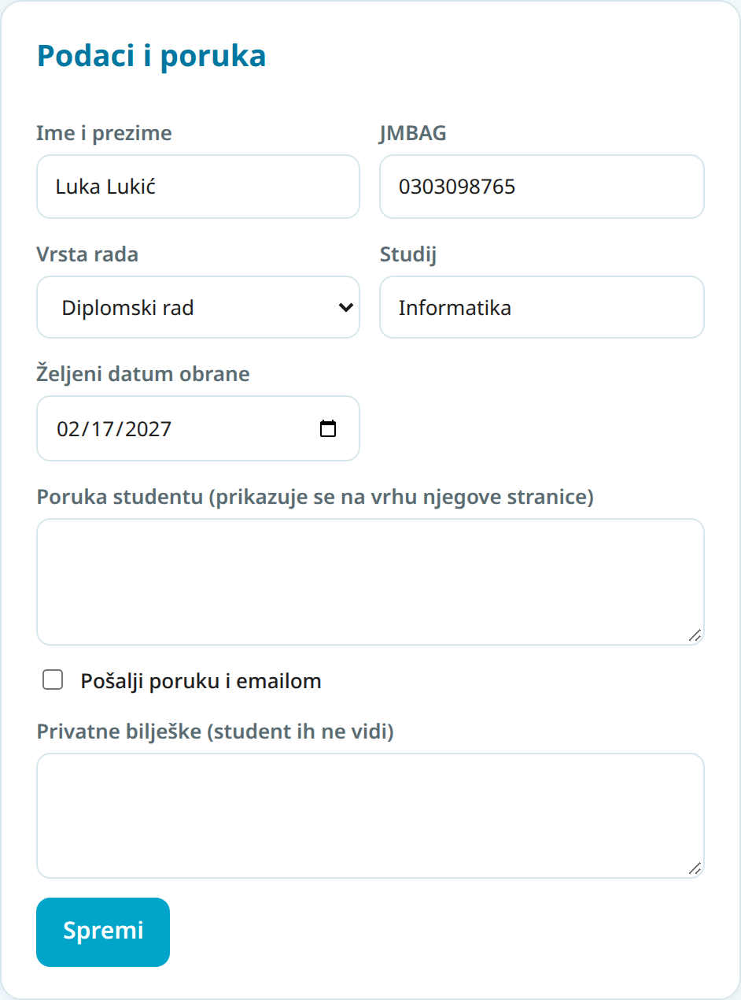
Materijali dodani ovdje vidljivi su samo tom studentu (npr. literatura ili podaci za njegovu temu). Unesite naslov, opis i datoteku ili poveznicu (URL) pa kliknite Dodaj. Student dobiva email „Novi materijal: …”.
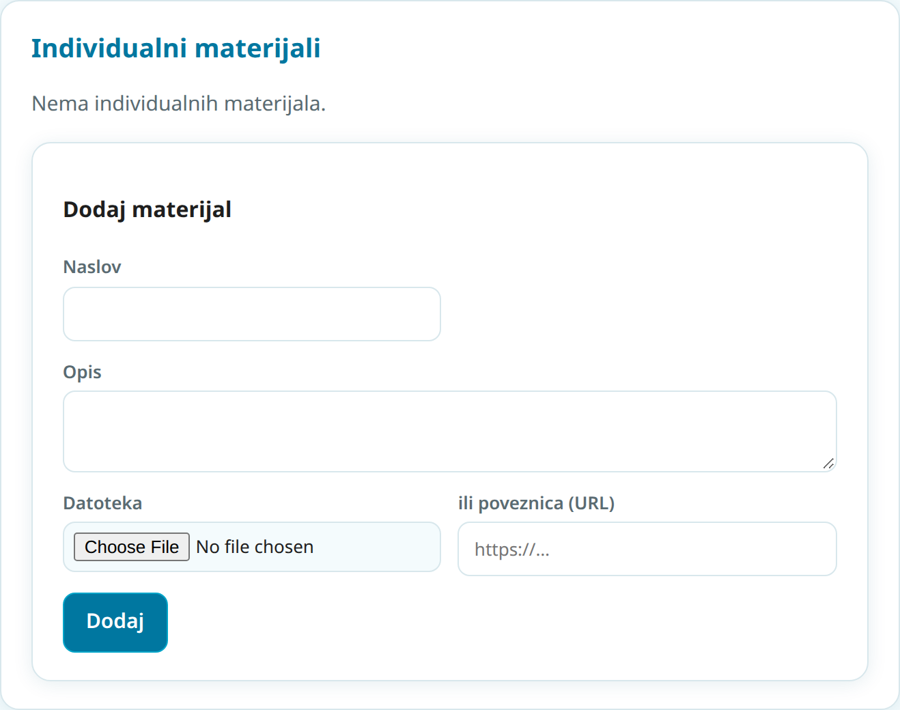
Na dnu detalja je kronološki zapis svih promjena statusa: vrijeme, status, tko je promjenu napravio (admin ili student) i napomena.
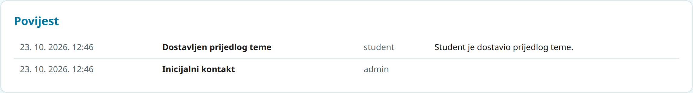
Gumb Obriši studenta (gore desno u detalju) trajno briše studenta i sve njegove predane datoteke i povratne datoteke. Radnja se ne može poništiti; aplikacija traži potvrdu. Individualni materijali tog studenta ostaju na kartici „Predlošci i materijali” i treba ih obrisati zasebno. Brišu se i svi izvještaji komisije tog studenta (njihovi linkovi za potpis prestaju raditi).
U detalju svakog studenta nalazi se okvir Izvještaji komisije (istaknut plavim rubom kad je student u statusu Ocjenjivanje komisije). Tu učitavate izvještaj povjerenstva i dobivate javni link za potpis koji šaljete članovima povjerenstva – za potpis nije potrebna prijava.
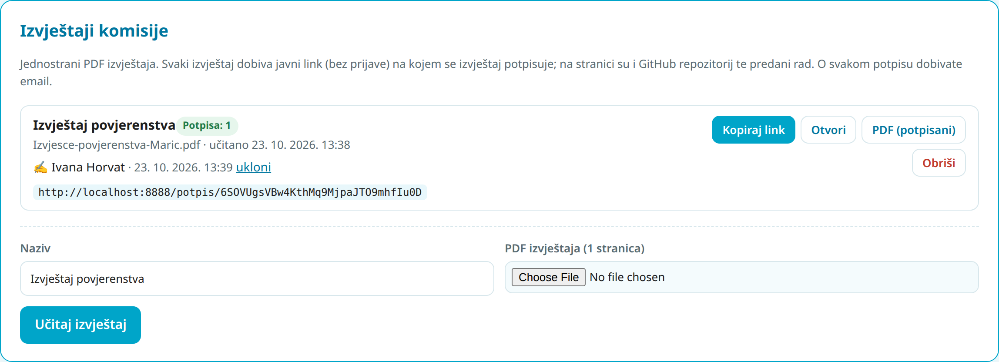
| Akcija | Što radi |
|---|---|
| Kopiraj link | Kopira javni link …/potpis/<oznaka> u međuspremnik. |
| Otvori | Otvara stranicu za potpis (kako je vide potpisnici). |
| PDF (potpisani) | Otvara trenutnu verziju PDF-a sa svim potpisima. |
| ukloni (uz potpis) | Uklanja pojedini potpis (npr. pogrešan ili neovlašten); PDF se ponovno generira bez njega. |
| Obriši | Briše izvještaj i sve potpise; link trajno prestaje raditi. |
Na stranici su: pregled izvještaja, podaci o radu (student, vrsta rada, tema HR/EN), gumb GitHub repozitorij (zadnja poveznica koju je student unio) i gumb Predani rad (PDF) – preuzima konačnu verziju rada, a ako je nema, zadnju predaju. Potpisnik:
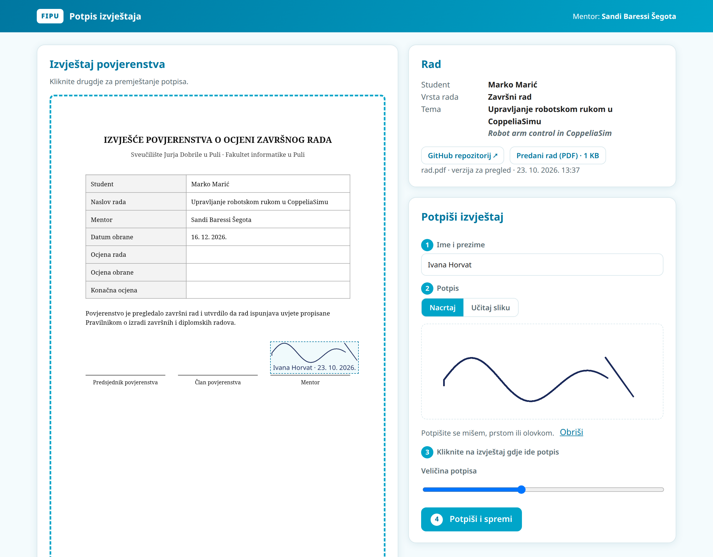
Potpis se upečatava u PDF zajedno s imenom i datumom ispod njega, potpisana verzija sprema se online, a Vi dobivate email „Izvještaj potpisan: …” s poveznicom na potpisani PDF. Isti link mogu koristiti svi članovi povjerenstva – svaki potpis dodaje se na isti PDF (do 12 potpisa), a popis potpisa vidljiv je na stranici i u administraciji.
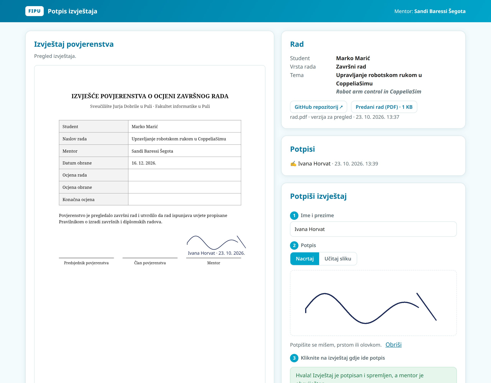
Link je dug i nasumičan (nije ga moguće pogoditi), ali svatko tko ga dobije može vidjeti izvještaj, preuzeti predani rad i dodati potpis. Šaljite ga samo članovima povjerenstva. O svakom potpisu dobivate mail; neovlašten potpis uklonite, a ako je link „procurio”, obrišite izvještaj i učitajte ga ponovno (dobiva novi link).
Na vrhu kartice su službeni predlošci (DOCX i LaTeX predložak rada te predložak prezentacije za obranu, svaki s PDF pregledom). Oni su dio same aplikacije i dolaze iz repozitorija ssegota/sbs-fipu-diplomski (lokalno ~/Documents/FIPU/diplomski-template). Kako ih osvježiti opisano je u poglavlju 11.
Ispod su svi materijali. Svaki je označen s Svi studenti ili Samo: ime studenta.
Gumb Obriši uklanja materijal i njegovu datoteku.
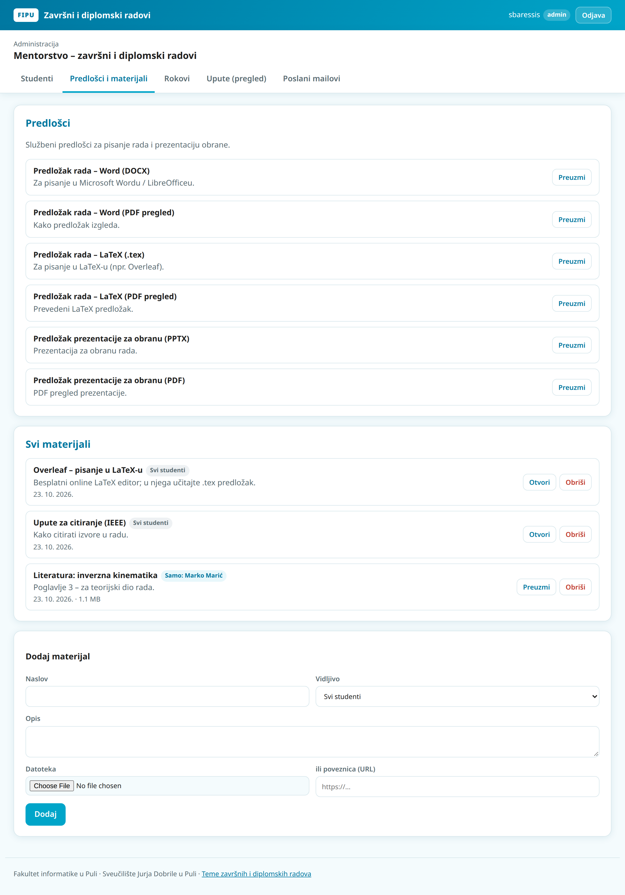
Rokovi se studentima prikazuju u kartici „Upute i rokovi”, u koraku 3 („Rokovi i prijava obrane”), sortirani po datumu; prošli rokovi su blijedi.
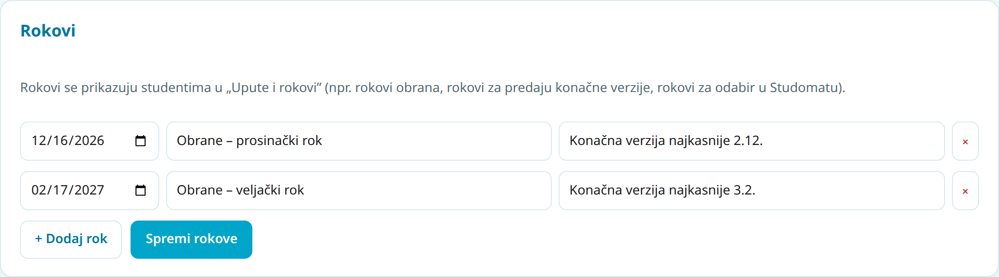
Pravilo „konačna verzija najmanje 14 dana prije obrane” ugrađeno je u aplikaciju: studentu se iz željenog datuma obrane računa krajnji rok, a Vama u mailu o predaji konačne verzije stiže upozorenje ⚠ ako je do obrane manje od 14 dana. Vrijednost se mijenja u shared/statuses.js (MIN_DAYS_BEFORE_DEFENSE).
Svaka obavijest koju aplikacija pošalje zapisuje se ovdje (vrijeme, primatelj, naslov, status). Klik na redak prikazuje cijeli tekst maila.
| Status | Značenje |
|---|---|
| poslano | Mail je uspješno predan SMTP poslužitelju. |
| zabilježeno | SMTP nije konfiguriran – mail je samo zapisan, nije poslan. |
| greška | Slanje nije uspjelo; zadržite pokazivač iznad za poruku greške. |
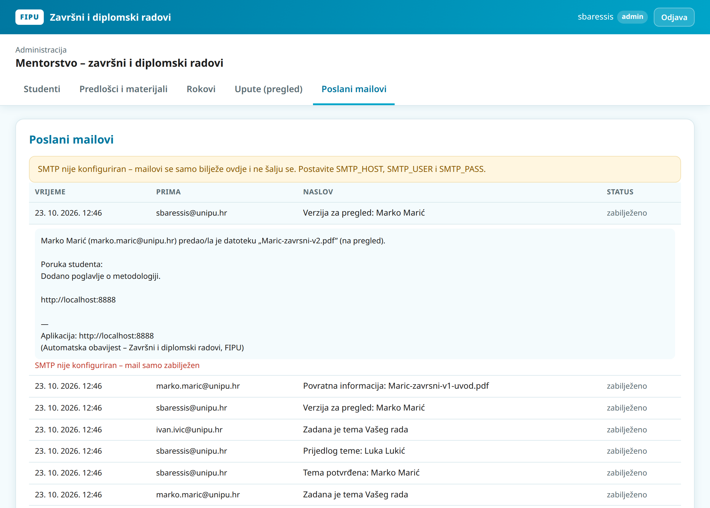
Mailovi se ne šalju dok se ne postave varijable SMTP_HOST, SMTP_USER i SMTP_PASS (poglavlje 11). Do tada je ova kartica jedini zapis obavijesti.
| Događaj | Promjena statusa | |
|---|---|---|
| Nepoznati student se prijavi | novi zapis → Inicijalni kontakt | Vama: „Novi student u aplikaciji” |
| Student pošalje prijedlog teme | → Dostavljen prijedlog teme | Vama: „Prijedlog teme: ime” |
| Vi kliknete „Zadaj temu i obavijesti” | → Tema zadana | Studentu: „Zadana je tema Vašeg rada” |
| Student potvrdi odabir teme | → Tema odabrana – pisanje rada | Vama: „Tema potvrđena: ime” |
| Student preda verziju za pregled | bez promjene | Vama: „Verzija za pregled: ime” |
| Student preda konačnu verziju | → Rad predan | Vama: „KONAČNA verzija: ime” (+ ⚠ ako je < 14 dana do obrane) |
| Vi pošaljete povratnu informaciju | bez promjene | Studentu: „Povratna informacija: datoteka” |
| Vi ručno postavite status | → odabrani status | Studentu: „Status rada: …” (može se isključiti) |
| Vi dodate individualni materijal | bez promjene | Studentu: „Novi materijal: …” |
| Vi spremite poruku uz „Pošalji i emailom” | bez promjene | Studentu: „Nova poruka mentora” |
| Netko potpiše izvještaj komisije (javni link) | bez promjene | Vama: „Izvještaj potpisan: naziv – student” |
Automatski prijelazi idu samo naprijed (npr. novi prijedlog teme ne vraća studenta koji već piše rad). Unatrag status možete pomaknuti samo ručno.
Obavijesti „Vama” idu na adresu iz NOTIFY_EMAIL, a ako ona nije postavljena, na ADMIN_EMAILS.
Za isprobavanje studentskog dijela bez pravog studenta postoji skrivena test prijava za jedan fiksni račun: test.student@unipu.hr.
/?test) – u privatnom/incognito prozoru ako ste istovremeno prijavljeni kao admin.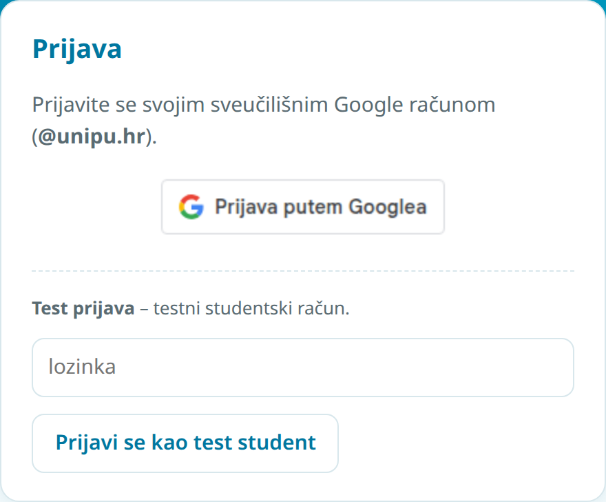
/test ili uz ?test).TEST_LOGIN_PASSWORD na Netlifyju (Project configuration → Environment variables). Promijenite je naredbom netlify env:set TEST_LOGIN_PASSWORD "nova" --secret --context production i ponovnim deployem.[TEST] u naslovu – tako vidite i studentske obavijesti.TEST_LOGIN_PASSWORD (ili TEST_STUDENT_EMAIL) na Netlifyju i ponovno deployajte.src/), boje FIPU.netlify/functions/api.mjs na ruti /api/*.diplomski (studenti, materijali, rokovi, datoteke u komadima od 4 MB, zapis mailova). Najveća datoteka: 60 MB.SESSION_SECRET.| Varijabla | Opis |
|---|---|
SESSION_SECRET | Tajni ključ za potpis sesija. Promjena odjavljuje sve korisnike. |
GOOGLE_CLIENT_ID | OAuth klijent (isti kao MarendApp/menzapp). |
ADMIN_EMAILS | sbaressis@unipu.hr (više adresa odvojiti zarezom). Obavezno – bez nje instanca nema administratora. |
MENTOR_NAME | Ime mentora na stranici za prijavu: Sandi Baressi Šegota. |
ALLOWED_DOMAIN | unipu.hr |
APP_URL | Poveznica u mailovima: https://diplomski-fipu.netlify.app |
SMTP_HOST, SMTP_PORT, SMTP_USER, SMTP_PASS, MAIL_FROM | Slanje mailova (npr. smtp.gmail.com, 465, @unipu.hr adresa i Google app lozinka). |
NOTIFY_EMAIL | Neobavezno: kamo idu obavijesti adminu. |
TEST_STUDENT_EMAIL, TEST_LOGIN_PASSWORD | Test prijava (poglavlje 10). |
U Google računu uključite dvofaktorsku autentifikaciju i izradite App password, zatim:
netlify env:set SMTP_HOST smtp.gmail.com
netlify env:set SMTP_PORT 465
netlify env:set SMTP_USER sbaressis@unipu.hr
netlify env:set SMTP_PASS "app-lozinka" --secret --context production
netlify deploy --build --prod
U Google Cloud Console → Google Auth Platform → Clients → (klijent 254539270785-…) → Authorized JavaScript origins moraju biti https://diplomski-fipu.netlify.app i, za lokalni rad, http://localhost:8888. Ako se promijeni adresa aplikacije, dodajte novu.
main repozitorija ssegota/diplomski-app pokreće build na Netlifyju (Netlify GitHub aplikacija mora imati pristup repozitoriju).netlify deploy --build --prod.cd ~/Documents/FIPU/Diplomski-App && npm install && netlify dev --offline → http://localhost:8888. Lokalna datoteka .env (ne ide u git) uključuje DEV_LOGIN=true: na stranici za prijavu pojavljuje se „DEV prijava” kojom se možete prijaviti bilo kojim emailom. Na produkciji je DEV prijava uvijek isključena. Lokalni podaci su odvojeni od produkcijskih.
Nakon izmjene predložaka u ~/Documents/FIPU/diplomski-template: npm run sync-templates, zatim commit i push (ili ručni deploy).
Aplikacija nema automatski backup. Podatke možete pregledati i preuzeti Netlify CLI-jem, npr. netlify blobs:list diplomski i netlify blobs:get diplomski "student/ime@unipu.hr".
Izvori ovih uputa su u docs/src/ (HTML + slike); PDF-ovi su u docs/.
Aplikaciju mogu koristiti i drugi mentori, ali svaki mentor deploya vlastitu instancu: vlastiti Netlify site, vlastitu bazu studenata i datoteka, vlastite obavijesti. Instance su potpuno odvojene – mentor ne vidi tuđe studente, niti itko drugi vidi njegove.
Sve što je vezano uz osobu mentora postavlja se varijablama okruženja na Netlifyju. Ključna je ADMIN_EMAILS – vlastiti @unipu.hr email postaje administrator. Bez nje instanca nema administratora.
netlify.toml (ništa ne mijenjati). Zapišite adresu sitea, npr. https://moj-mentor.netlify.app.| Varijabla | Vrijednost |
|---|---|
ADMIN_EMAILS | Vaš email, npr. ime.prezime@unipu.hr |
MENTOR_NAME | Vaše ime, npr. Ime Prezime |
APP_URL | Adresa Vašeg sitea |
GOOGLE_CLIENT_ID | Client ID iz koraka 3 |
SESSION_SECRET | Dugi nasumični niz (npr. openssl rand -hex 32), kao secret |
ALLOWED_DOMAIN | unipu.hr |
SMTP_*, MAIL_FROM | Neobavezno – za slanje mailova (poglavlje 11) |
TEST_STUDENT_EMAIL, TEST_LOGIN_PASSWORD | Neobavezno – test prijava (poglavlje 10) |
public/predlosci/ su zajednički FIPU predlošci; ako želite druge, zamijenite datoteke i pushajte.Isto putem Netlify CLI-ja (umjesto koraka 2, 4 i 5):
netlify sites:create --name moj-mentor
netlify env:set ADMIN_EMAILS ime.prezime@unipu.hr
netlify env:set MENTOR_NAME "Ime Prezime"
netlify env:set GOOGLE_CLIENT_ID "…" · netlify env:set APP_URL https://moj-mentor.netlify.app
netlify env:set SESSION_SECRET "$(openssl rand -hex 32)" --secret --context production
netlify deploy --build --prod